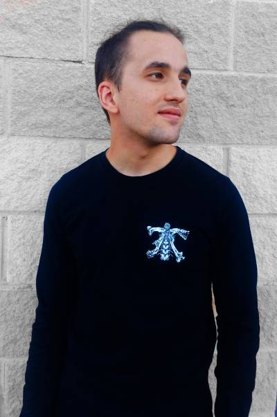
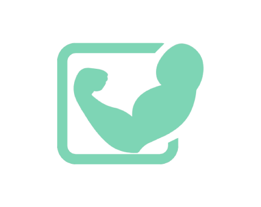
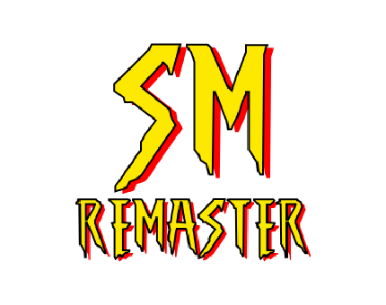
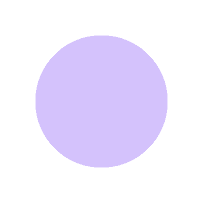
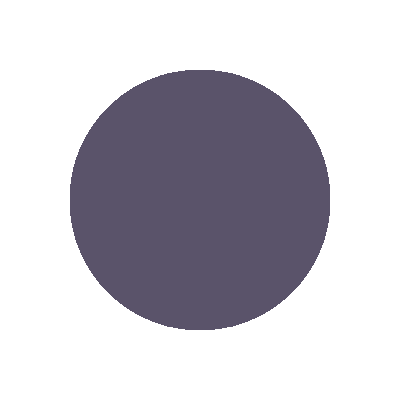

¡Hola!, soy Víctor un desarrollador de aplicaciones multiplataforma y este es mi portfolio web en el que podrás encontrar algunos de los proyectos que he desarrollado y aquellos que están siendo desarrollados, junto a mis métodos de contacto y algo más de información personal sobre mis habilidades como desarrollador.
Gracias a la formación que he recibido y al periodo de prácticas en empresa que he desarrollado, soy capaz de adaptarme a trabajar en la mayoría de lenguajes populares y entornos de trabajo, tanto en el ámbito de front-end como en el de back-end lo que me permite adaptarme a la mayoría de situaciones y resolver aquellos problemas que puedan aparecer.


El nombre de este proyecto es "GYM_RECORDS", se trata de una aplicación móvil que busca digitalizar y automatizar el proceso de rastreo del entrenamiento y el apartado nutricional, de esta forma los usuarios pueden comprobar si sus rutinas y dietas están ayudando a cumplir sus objetivos y a comprobar como estos elementos están influyendo en su evolución.
- ESTADO: EN DESARROLLO
- TECNOLOGÍAS USADAS: KOTLIN, SQLITE, PHOTOSHOP
- PLATAFORMAS: ANDROID
- TAMAÑO DEL EQUIPO: 1 INTEGRANTE
- ENLACE AL PROYECTO
El nombre de este proyecto es "SM_REMASTER", se trata de un proyecto que intenta de adaptar a los medios actuales algunos niveles del Spiderman-Man orginal sacado para la Playsation 1, actualizando el modelado de los personajes a un estilo mas actual y tratando de mejorar la sensacion de control sobre el juego
- ESTADO: EN DESARROLLO
- TECNOLOGÍAS USADAS: UNITY, C#, BLENDER, PHOTOSHOP
- PLATAFORMAS: DESKTOP
- TAMAÑO DEL EQUIPO: 1 INTEGRANTE
- ENLACE AL PROYECTO

Si quieres ver más en profundidad mi perfil o te interesa alguno de los proyectos, puedes encontrarme en cualquiera de las redes que te comparto en los iconos, puedes contactarme a través de ellas también si quieres.
Aunque si realmente estás interesado en mis servicios, te agradecería que me contactases o bien por LinkedIn o bien por el botón de "contáctame" que te dejo, ya que este te redirigirá para que me envíes un correo a mi mail profesional.
Aunque me considero versátil en el entorno de desarrollo, sí que es cierto que tengo ciertas preferencias y entornos en los que considero que me desenvuelvo mejor, para reflejar estas preferencias y habilidades de una forma un poco más visual me he autoevaluado a mí mismo en una escala del 0 al 5 en las tablas situadas debajo de este texto
LENGUAJES DE PROGRAMACIÓN


